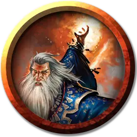

Воплотитель
Evoker
Средний Гуманоид (Любая раса), любое мировоззрение

Класс Доспеха 12 (15 с доспехами мага)
Хиты 66 (12к8 + 12)
Скорость 30 футов
| мод | спас | ||
|---|---|---|---|
| СИЛ | 9 | −1 | −1 |
| ЛОВ | 14 | +2 | +2 |
| ТЕЛ | 12 | +1 | +1 |
| мод | спас | ||
|---|---|---|---|
| ИНТ | 17 | +3 | +7 |
| МДР | 12 | +1 | +5 |
| ХАР | 11 | +0 | +0 |
Навыки История +7, Магия +7
Чувства пассивное Восприятие 11
Опасность 9 (5000 опыта)
Бонус мастерства +4
Среда обитания Город
Особенности
Языки. Любые четыре языка.
Использование заклинаний. Воплотитель является заклинателем 12-го уровня. Его базовой характеристикой является Интеллект (Сл спасброска от заклинания 15, +7 к попаданию атаками заклинаниями). У него подготовлены следующие заклинания волшебника:
• Заговоры (неограниченно): огненный снаряд [fire bolt], свет [light], фокусы [prestidigitation], луч холода [ray of frost]*
• 1 уровень (4 ячейки): огненные ладони [burning hands], доспехи мага [mage armor], волшебная стрела [magic missile]
• 2 уровень (3 ячейки): отражения [mirror image], туманный шаг [misty step], дребезги [shatter]*
• 3 уровень (3 ячейки): контрзаклинание [counterspell], огненный шар [fireball], молния [lightning bolt]
• 4 уровень (3 ячейки): град [ice storm],* каменная кожа [stoneskin].
• 5 уровень (2 ячейки): длань Бигби [bigby’s hand], конус холода [cone of cold].
• 6 уровень. (1 ячейка): пляшущая молния [chain lightning], ледяная стена [wall of ice].
*Заклинание Воплощения.
Построение заклинаний. Когда Воплотитель накладывает заклинание Воплощения, воздействующее на других существ, которых может видеть, он может выбрать число существ равное уровню заклинателя + 1. Эти существа автоматически преуспевают в спасброске от заклинания и не получают урона, если по описанию должны получить половину урона от заклинания при успешном спасброске.
Действия
Боевой посох. Рукопашная атака оружием: +3 к попаданию, досягаемость 5 футов, одна цель. Попадание: Дробящий урон 2 (1к6 – 1) или дробящий урон 3 (1к8–1) если используется двумя руками.
Описание
Воплотители – специализированные волшебники, которые используют магическую энергию и элементальные силы, чтобы разрушать. Многие имеют склонность быть импульсивными и агрессивными. Другие холодны и сдержанны, выпуская свою силу только в необходимый момент, чтобы использовать слабости противников.